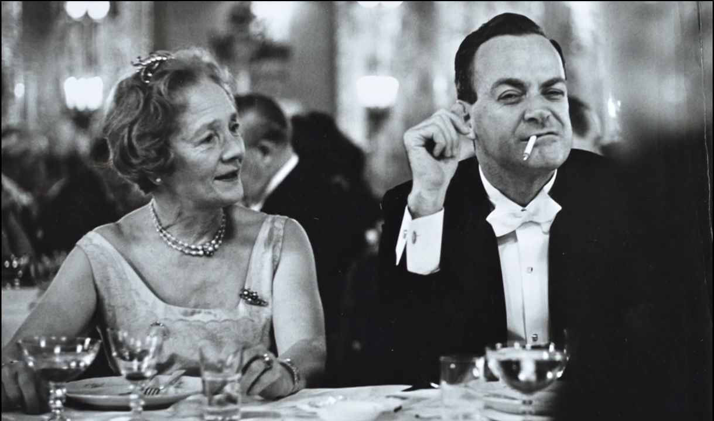
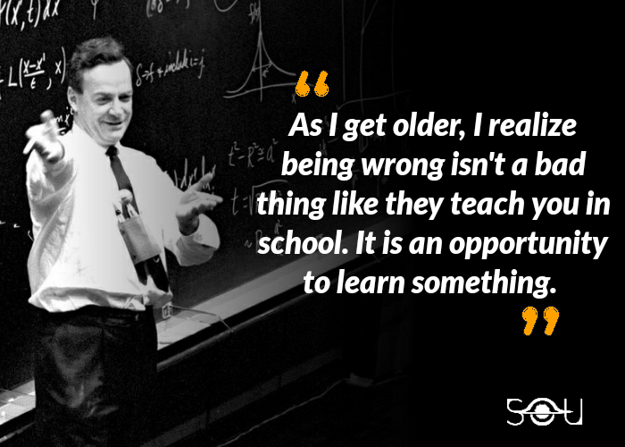

HISTORY
Everything you need to know about the popular American theoretical physicist famous for his formulation of quantum mechanics and particle physics.
Richard Philips Feynman was born in New York City, USA, on May 11, 1918. He was a mischievous child.
When he was ten years old, he started collecting old radio sets for his electronics lab, and by 12, he was already assembling his own devices. He studied physics at the Massachusetts Institute of Technology (MIT), continuing his career at Princeton University.
Being a student at Princeton, he continued with his love for research. For example, with the elements from a microscope, he made observations about the habits of the ants that entered his room and devised experiments to determine how they discover things.
He received his Ph.D. in Physics in 1942 for his work on electromagnetic waves supervised by American nuclear physicist John Wheeler.
His Career
In 1945, he moved to Cornell University as a professor of theoretical physics. He collaborated in the Manhattan Project in a secret laboratory in Los Alamos, skipping military discipline with a series of actions that highlighted the security of the place where the United States developed the atomic bomb. Later, he was invited as a visiting professor by the University of Rio de Janeiro (Brazil). He was later also a professor of theoretical physics at the Californian Institute of Technology, focusing his research on quantum electrodynamics, a discipline in which he developed the theory of the quantum field.
He invented a simple and widely used representation, the so-called Feynman diagrams. This Feynman technique became quite popular in the years to come.
How to Learn Faster with the Feynman Technique
For his contributions, especially “renormalization,” in quantum electrodynamics, he was awarded the Nobel Prize in Physics. Feynman also collaborated with physicist Murray Gel-Mann on the theory of nuclear interaction.
Inveterate Skeptic
Feynman was a nature lover. He liked to know how and why things happened and found beauty and pleasure in the essence of nature that was reserved for those who made an effort to understand their mechanisms. As a child, he showed signs of skepticism like the relief he felt when he discovered that Santa Claus was not real since the truth was much easier to understand than explaining why so many children receive gifts. In 1975, he learned of a person who was supposed to be able to bend spoons with his mind. It was Uri Geller. Given his skepticism about any fact that was not explained rationally, he managed to meet him at a Hollywood hotel. The meeting was a resounding failure for Geller who failed to demonstrate his supposedly paranormal abilities.
A Unique Genius
Feynman was a genius able to see the simplicity of seemingly complicated things. He had an unusual ability to appreciate the obvious.
Fun Facts About Richard Feynman
Did you know?
Feynman was an avid art lover, and his paintings were signed under the pseudonym “Ofey.” Feynman’s younger sister, Joan was also a physicist. He used to work in nude bars as an office space where he would draw sketches or write physics equations on the paper placemats of the topless bar. Feynman also did a short project in an acting role in the movie “Anti Clock.” He played the role of a professor in the film. His last words were interesting and said “I would hate to die twice. It is so boring.
Why Is Feynman Called A “Prankster?
Feynman is not just known for his contributions to physics but also his playful personality. He was famous for pulling many pranks when he was at Los Almos.
He was in love with verbal swordplay and jokes. That made him a fascinating figure at every party although it did get him into trouble with friends, family, and colleagues many times. Most of his memories of Los Almos talk more about his pranks on people and less about his studies there. He is one of those unique physicists who enjoyed playing pranks. This did make him popular at times but also aggravated some of his colleagues some of the time. He broke the typical stereotypes of physicists being introverts, socially awkward and serious. Hence, he rightly had the status of a “Prankster” amongst his colleagues of that time. The popular book, “Surely You’re Joking, Mr. Feynman” is a great sneak peek into the curious character of this genius physicist.
